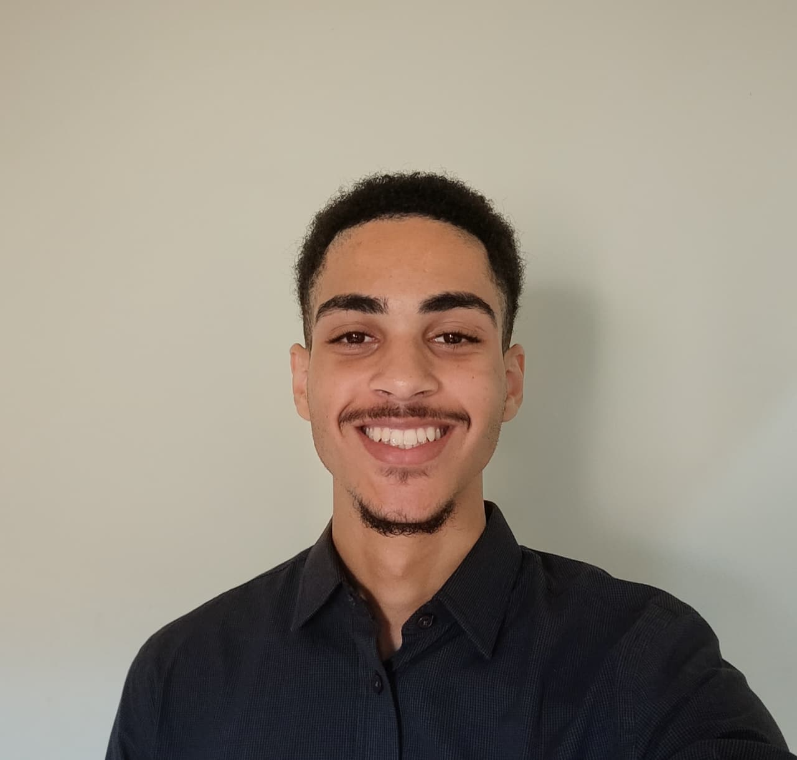

OLÁ, EU SOU
VICTOR
Estudante de Análise e Desenvolvimento de Sistemas.
Curioso por natureza. Movido pelo que a tecnologia pode construir.
uma linha de código por vez.
UMA JORNADA EM CONSTRUÇÃO
Conectando teoria, prática e vontade de aprender.Minha caixa de ferramentasALÉM DO CÓDIGO
Curiosidade como
ponto de partida.
Um pouco sobre quem está por trás deste portfólio.

PRAZER, VICTOR.
Gosto de descobrir o porquê
por trás de cada solução.
Sou estudante de Análise e Desenvolvimento de Sistemas na Faculdade de Tecnologia Professor José Camargo. Amo entender a lógica de como os sistemas e as tecnologias funcionam: o que acontece por trás de uma interface, como os dados se conectam e como uma ideia se transforma em algo que podemos usar.
Estou construindo minha base na área de tecnologia, unindo os conceitos das aulas à prática com programação, bancos de dados e desenvolvimento de interfaces. Procuro aprender com os desafios, organizar meu raciocínio e melhorar a cada projeto.
Acredito que boas soluções começam com atenção ao problema e às pessoas que vão utilizá-las. Meu objetivo é continuar aprendendo e desenvolver sistemas claros, úteis e bem estruturados.
Em formação. Em evolução.
Este portfólio acompanha minha trajetória acadêmica e o conhecimento que estou construindo.
MINHA BASE EM TECNOLOGIA
Conhecimento que
vira possibilidade.
As disciplinas que fizeram parte da minha jornada em 2026 e o que cada uma ensina. Selecione uma matéria para conhecer seus conceitos e aplicações.
Os textos apresentam uma síntese dos temas de cada disciplina.
MINHA CAIXA DE FERRAMENTAS
Aprender. Praticar.
Construir.
Tecnologias que conheço e utilizo nos estudos e projetos acadêmicos.
Da estrutura de um banco de dados aos detalhes de uma interface, cada ferramenta amplia minha forma de resolver problemas.
Conhecimentos em desenvolvimentoA prática faz parte do processo.
Uso esses conhecimentos para explorar aplicações, modelar sistemas, trabalhar com dados e desenvolver interfaces. Estou sempre ampliando essa base.